Native C++17
No virtual machine, no interpreter. The server ships as a single executable for Windows and Linux.

Falcon reimplements the Minecraft: Bedrock Edition protocol, world storage and gameplay by hand. No runtime to install: one self-contained executable.
No virtual machine, no interpreter. The server ships as a single executable for Windows and Linux.
Sockets, reliability layer and connection handshake are implemented in the Network library.
WebRTC signaling and transport run alongside RakNet, with LAN discovery.
Noise, density functions, aquifers, caves, 3D biomes, ore veins and surface features.
Generation, population, lighting and LevelDB storage run on worker threads, never on the tick.
Custom items, blocks, actors and recipes loaded from packs, with a QuickJS scripting engine.
Grab a build from the releases, or build it yourself with CMake 3.16+, a C++17 compiler, zlib and OpenSSL.
git clone https://github.com/Falcon-MC/Falcon.git
cd Falcon
cmake -B build -G Ninja
cmake --build build